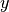
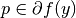
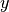
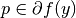

BregmanDistance¶
- class odl.solvers.functional.functional.BregmanDistance(*args, **kwargs)[source]¶
Bases:
FunctionalThe Bregman distance functional.
The Bregman distance, also refered to as the Bregman divergence, is similar to a metric but satisfies neither the triangle inequality nor symmetry. Nevertheless, the Bregman distance is used in variational regularization of inverse problems, see, e.g., [Bur2016].
Notes
Given a functional
 , a point , and a (sub)gradient
, the Bregman distance functional
, a point , and a (sub)gradient
, the Bregman distance functional
 in a point
in a point  is given by
is given by
For mathematical details, see [Bur2016]. See also the Wikipedia article: https://en.wikipedia.org/wiki/Bregman_divergence
References
[Bur2016] Burger, M. Bregman Distances in Inverse Problems and Partial Differential Equation. In: Advances in Mathematical Modeling, Optimization and Optimal Control, 2016. p. 3-33.
- Attributes:
adjointAdjoint of this operator (abstract).
convex_conjThe convex conjugate
domainSet of objects on which this operator can be evaluated.
functionalThe functional used to define the Bregman distance.
grad_lipschitzLipschitz constant for the gradient of the functional.
gradientGradient operator of the functional.
inverseReturn the operator inverse.
is_functionalTrueif this operator's range is aField.is_linearTrueif this operator is linear.pointThe point used to define the Bregman distance.
proximalReturn the
proximal factoryof the functional.rangeSet in which the result of an evaluation of this operator lies.
subgradThe subgradient used to define the Bregman distance.
Methods
__call__(x[, out])Return
self(x[, out, **kwargs]).bregman(point, subgrad)Return the Bregman distance functional.
derivative(point)Return the derivative operator in the given point.
norm([estimate])Return the operator norm of this operator.
translated(shift)Return a translation of the functional.
- __init__(functional, point, subgrad)[source]¶
Initialize a new instance.
- Parameters:
- functional
Functional Functional on which to base the Bregman distance.
- pointelement of
functional.domain Point from which to define the Bregman distance.
- subgradelement of
functional.domain A subgradient of
functionalinpoint. If it exists, a valid option isfunctional.gradient(point).
- functional
Examples
Example of initializing the Bregman distance functional:
>>> space = odl.uniform_discr(0, 1, 10) >>> l2_squared = odl.solvers.L2NormSquared(space) >>> point = space.one() >>> subgrad = l2_squared.gradient(point) >>> bregman_dist = odl.solvers.BregmanDistance( ... l2_squared, point, subgrad)
This is gives squared L2 distance to the given point, ||x - 1||^2:
>>> expected_functional = l2_squared.translated(point) >>> bregman_dist(space.zero()) == expected_functional(space.zero()) True